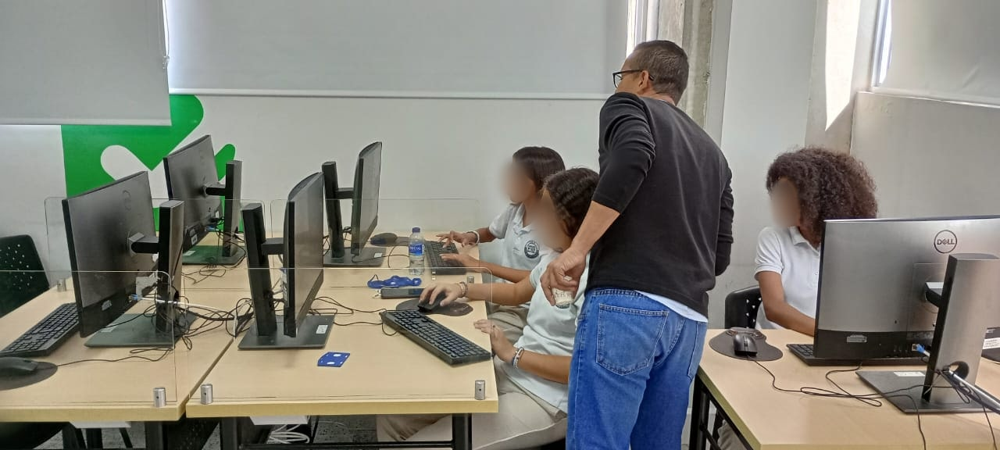
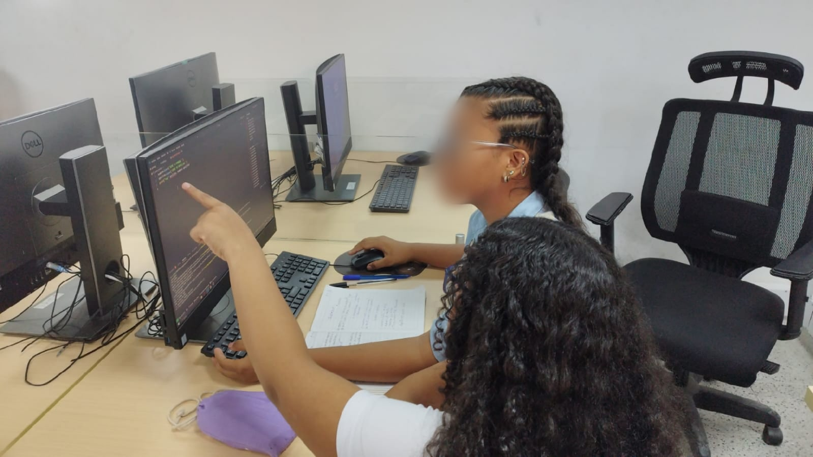
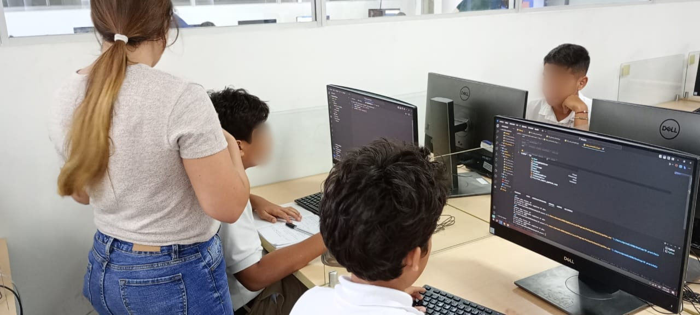

La programación ha emergido como una habilidad altamente demandada en el mercado laboral. Su relevancia radica en la capacidad que le permite a las empresas de implementar proyectos de transformación digital, permitiéndole reducir costos operativos y ofrecer servicios innovadores a sus clientes, lo cual impulsa la competitividad y el crecimiento empresarial en un entorno cada vez más digitalizado.
Las administraciones públicas han identificado una valiosa oportunidad para atraer inversiones relacionadas con la prestación de servicios de tecnología. En consecuencia, están implementando una serie de programas destinados a fomentar el desarrollo de habilidades en programación. Un ejemplo claro es el programa Barranquilla Territorio STEM + IS (Innovación para la sostenibilidad), lanzado por la Alcaldía de Barranquilla, que tiene como objetivo promover el desarrollo de habilidades de la ciencia y tecnología en las instituciones educativas de carácter oficial, desde su enfoque en STEM (ciencia, tecnología, ingeniería y matemáticas), junto con la innovación para la sostenibilidad.
Una de las actividades fue un taller de fundamentos de Python que realizamos,, la cual estuvo apoyada por los voluntarios de la comunidad de Python Barranquilla. Este taller fue una oportunidad invaluable para introducir a los participantes en los conceptos básicos de programación y familiarizarlos con el lenguaje Python.

Previo al taller
Cuando se abrió la convocatoria, aproximadamente 424 estudiantes de colegios distritales de Barranquilla se inscribieron para participar, provenientes de los grados Octavo y Noveno. Estos jóvenes habían recibido previamente una formación en Fundamentos de Lógica de Programación, utilizando como herramienta principal Flowgorithm.
Si bien hubiéramos querido abarcar a todos, no contábamos con la capacidad para poder abarcar esa gran cantidad de estudiantes. Por tal motivo, se decidió solamente seleccionar a 25 estudiantes. Para llevar a cabo esta selección, la Secretaría de Educación realizó una evaluación final del curso, a partir de la cual se escogieron a los 25 estudiantes con mejor desempeño para participar en el taller de Fundamentos de Python.
Además de la evaluación del curso, a los estudiantes se les realizaron dos preguntas adicionales; una para determinar su conocimiento previo sobre el lenguaje Python y otra para averiguar si estaban familiarizados con la comunidad de Python Barranquilla. Los resultados revelaron que:
- El 92,2% no conocía o nunca había explorado Python antes.
- El 79,2% desconocia la existencia de la comunidad de Python.
Preparación
Mientras se hacía la selección, la comunidad de Python Barranquilla empezó a trabajar en el desarrollo del contenido de las clases. Aquí el reto consistió en centrarse en los fundamentos del lenguaje Python, intentando enseñarles cómo lo aprendido usando Flowgorithm se podían aplicar. Aquí la propia experiencia de los voluntarios fue importante, porque cada uno mencionó como aprendió a programar, como lo enseña, y sobre todo los recursos educativos que usó o que ha encontrado (tutoriales Youtube, Artículos, libros, etc.).
Una vez revisamos los contenidos, tomamos las siguientes decisiones:
- Resumir los conceptos fundamentales, es decir, se tenía una frase corta para definir el concepto (por ejemplo: condicionales).
- Ilustrar con un ejemplo gráfico el concepto.
- Acompañar cada concepto con al menos un ejercicio.
Aquí tuvimos el cuidado de contextualizar los ejercicios en el contexto de nuestra Región Caribe (Ej: El tendero, El vendedor de raspados, entre otros). El motivo de contextualizar de esta forma es para generar esa conciencia de que lo que están aprendiendo si lo pueden aplicar de manera práctica, en vez de ejercicios demasiado abstractos. Los ejercicios se pueden encontrar en el siguiente repositorio de GitHub.

Capacitación
Después de haber elaborado y revisado los temas y contenidos de los talleres para asegurarnos de su adecuación, llegó el momento de evaluar si nuestra propuesta había sido efectiva. En primer lugar, al recibir a los estudiantes en las instalaciones, lo primero que hicimos fue presentar a cada uno de los voluntarios y que rol desempeñan en sus respectivos trabajos, Este primer paso resultaba fundamental para motivar a los jóvenes a concentrarse y participar activamente en el taller.
Durante la primera sesión, pusimos a prueba tanto las habilidades de los estudiantes como las de los docentes voluntarios. Era de esperar que algunos chicos tuvieran dificultades a la hora de entender algunos conceptos, pero los tutores supieron no solo ayudarlos a resolver sino también a darle la confianza a varios chicos. La prueba de ello es que en la segunda sesión varios de los chicos no solo mejoraron, sino que destacaron notablemente en su desempeño.
Una evidencia qué nos sorprendió durante el taller fue qué varios muchachos lograron dominar los ciclos. Desde la comunidad sabiamos qué habia un riesgo qué los chicos no lograran entender el concepto a la primera. Pero afortunadamente algunos lograron entender el concepto por su propia cuenta y a otros les ayudamos a comprender el concepto como parte de nuestro acompañamiento.

Conclusiones
Además de la gratificación personal derivada de haber contribuido con nuestro tiempo y conocimiento al desarrollo futuro de estos jóvenes, hemos extraído las siguientes conclusiones:
Hay talento local: El desempeño de estos estudiantes es notable desde una perspectiva objetiva, especialmente considerando su nivel de educación en bachillerato y sus diferentes contextos socioeconómicos.
Hay recursos disponibles: La infraestructura del SENA TIC en Barranquilla está bien equipada para la formación de talento en programación. Antes de la capacitación desconocíamos el alcance de su equipamiento, lo cual nos ha hecho reflexionar sobre el valor potencial de este espacio para futuras iniciativas.
Se requiere promoción: Iniciativas como esta necesitan ser promovidas continuamente para asegurar que la oportunidad de desarrollar el talento joven no se desaproveche. Es evidente, por ejemplo, que existe una falta de conocimiento generalizado sobre lenguajes de programación como Python, lo que subraya la necesidad de una mayor difusión y concienciación al respecto.
Agradecimientos
Queremos agradecer por el compromiso y la dedicación a nuestros voluntarios de la comunidad Python Barranquilla que participaron como mentores:
- Andrés Pérez
- Daniela Charris
- Javier Daza
- Jorge Aguilar
- María Camila Arciniegas
- Nicolle Antequera
- Sergio Molinares
- Valeria Ramos
Tambien aprovechamos para agradecerle a los siguientes profesionales su asesoramiento en la elaboración de los contenidos del taller:
- Sergio Orozco (Ingeniero de Sistemas)
- Silfri Medina (Docente en informática)
- Yasmin Valderrama (Psicóloga)
Y por ultimo, agradecerles a los miembros de la secretaría de educación por darnos la oportunidad de impartir este taller:
- José Castillo
- Jonathan Quintero